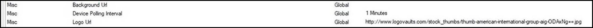

Note: You can set how information displays at the Global level (the default for all Profiles) or for just one Profile.

Note: You can set how information displays at the Global level (the default for all Profiles) or for just one Profile.
| Option | Description |
|---|---|
| Label/Message Settings | To change a label/message, simply edit the desired setting, change the value and click OK. Labels/messages that are too long to display in the EMS Room Sign App are truncated and appended with an ellipses. |
| Misc—Background URL | Leave blank to use the default the EMS Room Sign App background image. To change, specify a fully qualified URL to the image location. |
| Misc—Logo URL | Leave blank to use the default the EMS Room Sign App logo. To change, specify a fully qualified URL to the image location. Supported logo specifications (above) apply. |
| Misc—Device Polling Interval | Interval in minutes device polls the EMS database for booking information (e.g., new, changed, canceled) bookings. The EMS Room Sign App randomizes calls to the EMS database by +/- 20 seconds to ensure that all of your devices aren’t polling for information at identical times. |
| Misc—Pin to Access Settings Screen | Once the EMS Room Sign App is running on your device, double-tapping the EMS Room Sign App logo in the upper-left hand corner of the screen re-accesses the Settings screen. This setting requires the user to enter a PIN. |
To customize the logo and/or background, update the ‘Logo Url’ and ‘Background Url’ profile settings in the ‘Misc’ area.* You can use either a URL or a server path (e.g., /EmsRoomSign/Content/Images/custom-logo.png). The logo can be a maximum of 300 x 80 pixels. The background depends on the tablet resolution. For landscape mode, the image resolution will typically be 1024 x 768.
EMS Room Sign App Profile Settings
